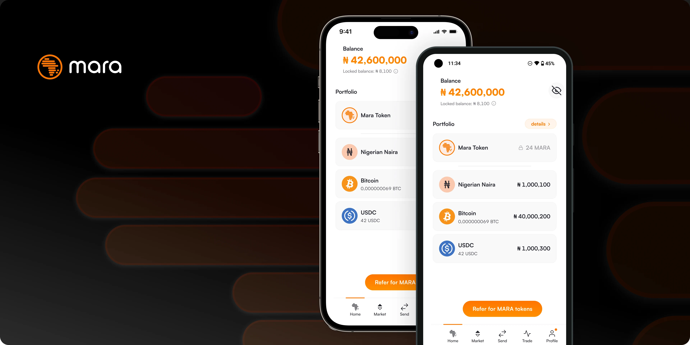
A crypto & fiat wallet for the African Market.
When I joined Mara it was in desperate need of Product leadership. I started off with a team of 4 designers, and ended up leading the design, customer support, and engineering teams. I focused on reliable and simple (agile) processes, paired with a strong and clear vision, that allowed each team to self manage, and stay motivated with high quality output.
I was also involved in providing product updates to current stakeholders, and pitching future product growth to current and potential investors.
As an individual contributor I started and completed the full redesign of the whole product in about a months time. Then helped manage following iterations and staggered development stages, until the full version was live and available to our 4M users.
head of design and product owner
Nov 2022 - Feb 2024
- Market
- /B2C
Fintech - platform
- Android & iOS
- location
- /Remote
Nigerian + UK company
This really happened.
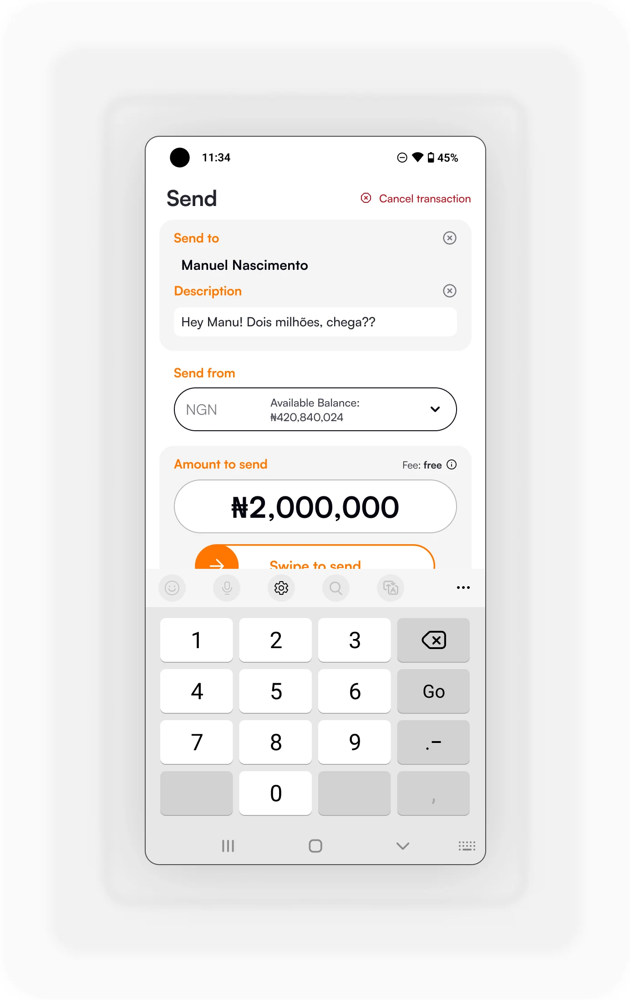
This screen might have been designed by about six people. Concurrently.
Mara was rife with design opportunity.
Design audit
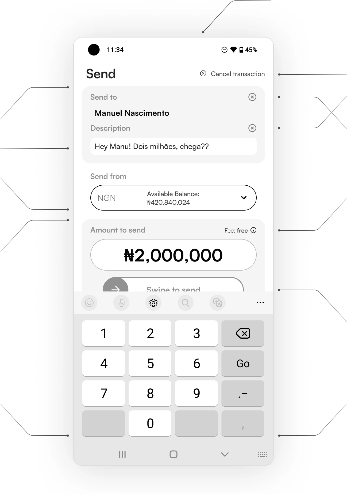
The user is bombarded with contrasting visual styles in just the first half of the screen.
Canceling something that hasn’t, or isn’t happening yet. Should have been a Back button.
I shouldn’t, but actually love that this is an octagon for absolutely no good reason.
Target practice.
If you hit eitherabove, you go for all the marbles on this one.
Genuinely the only way to cap this off was to hide the primary action under the keyboard.
Second half actually outdoes the first, nesting the previous styles creating a new design dimension.
Immediate action
This screen was actually a gift. Once I saw it, it allowed me to bypass a lot of assumptions I would have had otherwise — which would delay the necessary corrective actions for weeks or months. Within a week of joining, I had a full audit of the current state of Design.
home
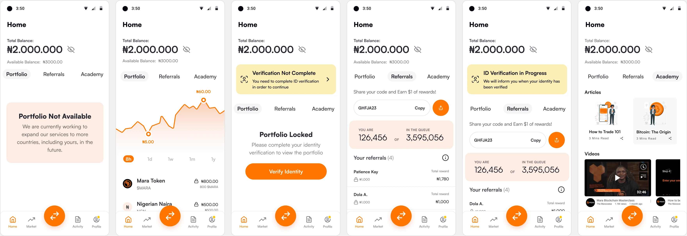
Same version
All these screens are the same view and version. There was an embedded navigation for Portfolio/Referrals/Academy, in addition to the more traditional navbar. And In-app notifications were less than consistent and sometimes affected the always-on Balance/Available Balance component.
Visual hierarchy
Nobody could tell what’s the first or second thing a user would see on either of these screens. And like the previous three, are also the same view and version of “Home”.
Academy
This should have been a standalone App. Ended up being a subsection of a main view.
profile/preferences
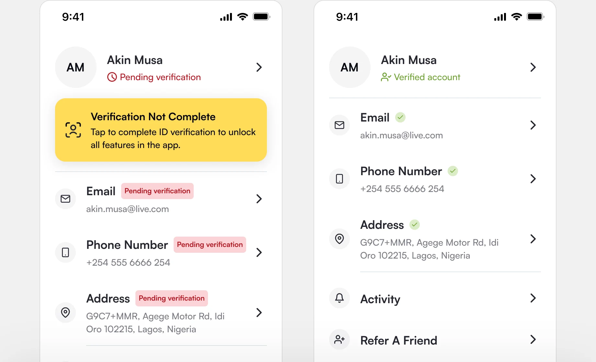
Overly zealous affordances
This was surely important information to convey to the user — and I knew the goal was to be annoying and nudge the user to complete verification, but it is my experience that users like a softer, more considerate touch when nudging.
Set a foundation.
Once I had a good grasp of the road ahead, and had prioritized accordingly with both design, engineering, and management, I started off on the basic design building blocks — analyzing the problem and detailing a solution to be carried out.
benjamin button
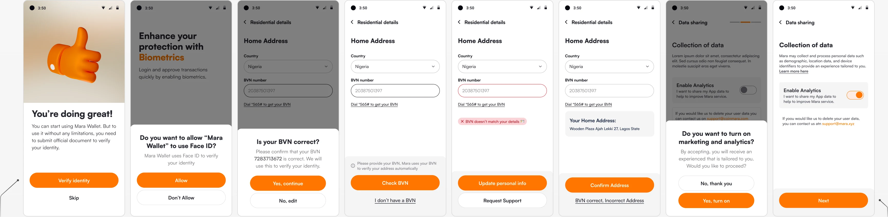
From onboarding, to Profile, to Settings, this component kept getting shorter.
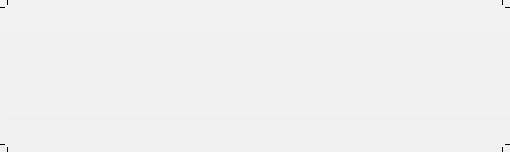
Component Analysis
- varying width (but didn’t seem to be a hard requirement)
- used as a “static” drawer, and inside actual drawers
- could have header, body copy, or aux text above it
- could have secondary button (with varying style)
First step in analyzing this component was identifying all variations and properties in use. The goal was not yet to assess and correct it’s usage, but to establish the an improved foundation for this specific component.
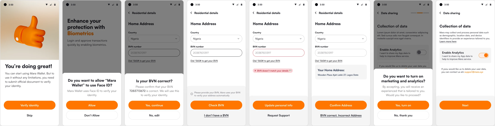
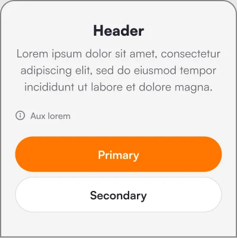
This solution (using just a few dynamic properties) replaced 8 components, that were adding unnecessary complexity both to the UI and user experience, as well as to the codebase and engineering maintenance efforts.
Go deep.
After the smaller building bricks, I turned my focus to feature flows and user journeys. And there’s nothing quite like onboarding. Some apps get away without any onboarding, some require just 1 screen with email input before showing the home screen.
Mara had 27 steps.
No filler screens were added for dramatic effect.
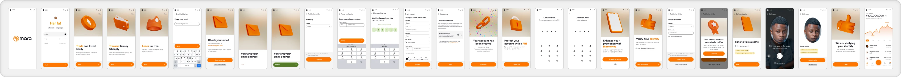
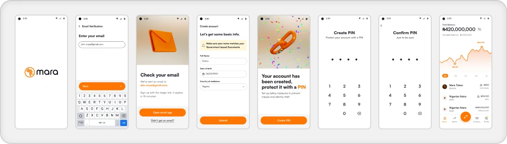
More than 70% reduced!
More than a dozen iterations in, I was able to narrow the onboarding to 8 screens — less than a third of the original.
By breaking it up into smaller modules, I was able to postpone or remove a lot of steps. Even when accounting for those, the new onboarding was less than half the original, with 13 screens for all flows combined.
The right context.
Reducing onboarding by 70% is a neat trick. But I didn’t delete everything, there are still steps the user must do. And these steps should be served to the user in the right context, with minimum friction.
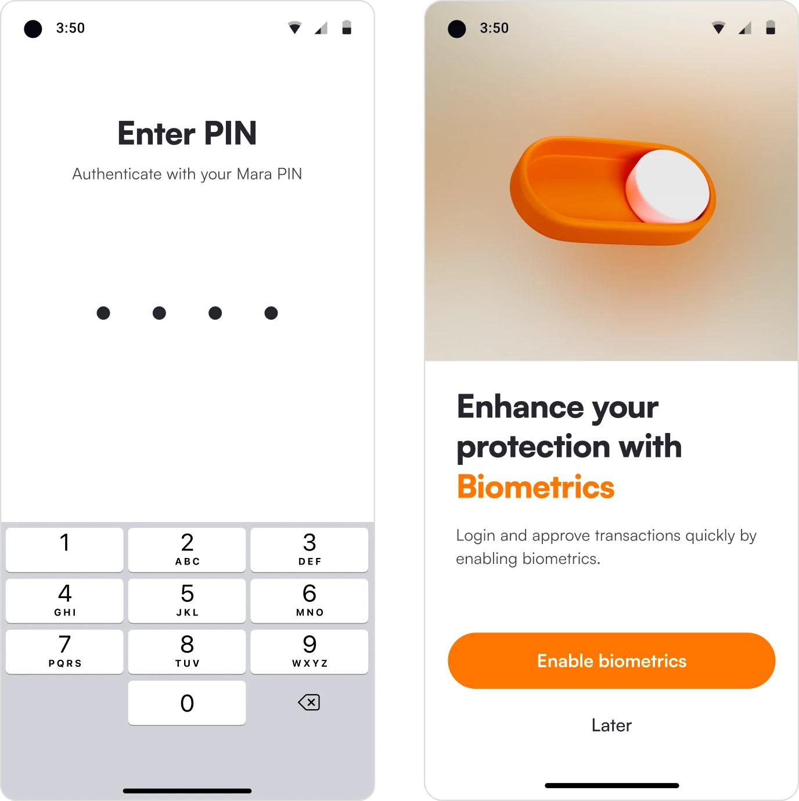
Complete KYC
Although not essential to create an account, and let the user browse the market values, and participate in the referral program, the KYC verification is mandatory by law to enable transactions such as buying and selling of assets. By removing it from onboarding, the user gets to have a partial experience of the app right away, and by serving up the flow in the context of the action that requires it, the user is more likely to complete it.
Login with FaceID
As a financial product, security is paramount — even before funds are added. Biometrics is a secondary layer that works on top of the primary authentication (PIN or other) making it non essential at onboarding. Having removed it, it was then important pick the right time to suggest it, such as after the first successful PIN authentication. This ensures the user is familiar with the primary security mechanism, and provides the alternative in the exact context in which it’ll be used.
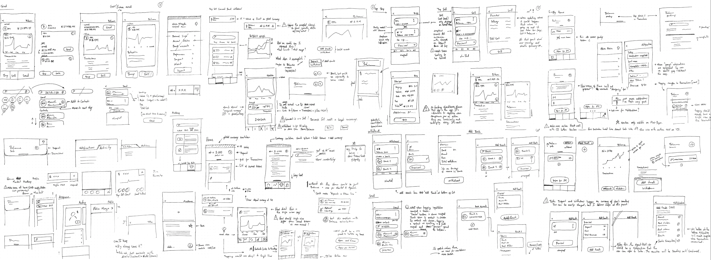
A full redesign should rarely be about design.
From the moment I joined, I had a sense that big shake up was due — neither users nor the product team were particularly happy with anything. So with every iteration, I prepared, gathering important knowledge on the pain points for each flow, mapping user feedback and complaints to implementation shortcomings, and overall getting a feel for what was (or should be) the true essence of the app.
When the time came, I set my sights on the 6 main flows: Buy/Sell, Deposit/Withdraw, Send/Receive. That was the foundation of what the app ought to be, and they were all very similar in nature (money in vs money out). Yet, neither in the design, nor in the code, was there any evidence that these flows were related. UI and UX abstractions and metaphors were all over the place, and similar concerns came from every dev I spoke with.
This was an opportunity to clean house on both fronts, setting a vision that would motivate and guide all teams.
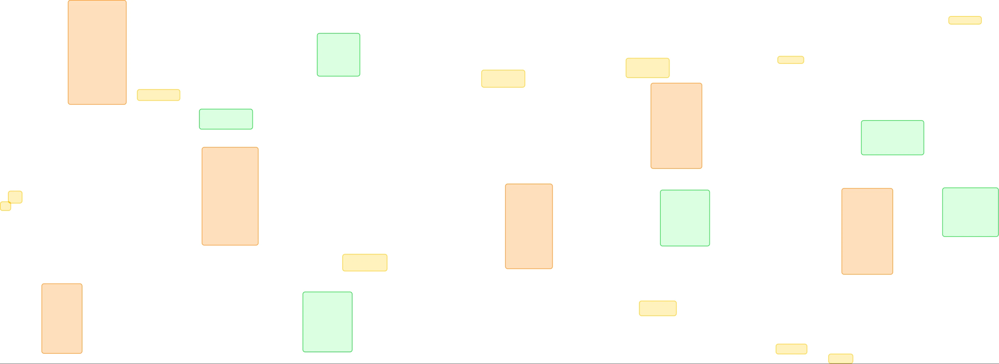
Essentials
One of my first steps was to identify the essential components and combos, that either performed fundamental functions, or just showed up a lot.
The “value box input” had to be the most essential component of all. Part of the flow’s fundamental function, one all of the six main flows (and others). It was also the most ravaged by “creativity”.
After tracing every single usage of this component and itemizing all the possible properties it needed, I got started on a new component design that allowed for all the same functionality, without looking like Sloth from The Goonies.
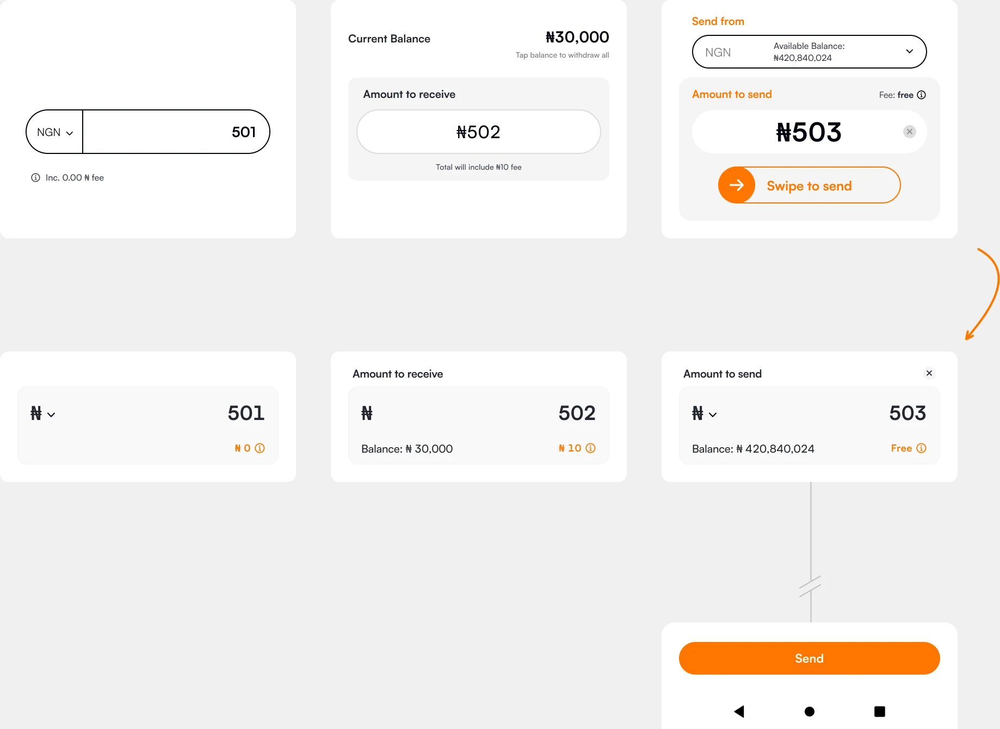
Top and bottom, have exactly the same functionality and information.
System
A Design System isn’t just a collection of components used in a given app. The “system” part of it, is incredibly important — it should mean that the components work well with each other, and fit together, creating more complex structures.
When analyzing components, there’s tremendous care and attention, taking into account what’s happening around them. Top, down, left, right, what could cause a data refresh or fetch? Does it need empty states? Could it become blocked by a floating element like the keyboard? Etc.
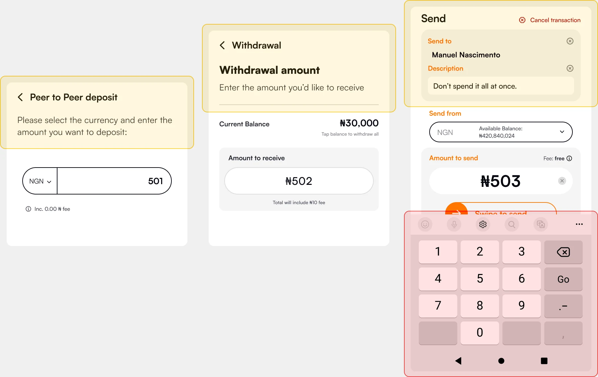
Full dress
Just one thing left to do — dress it up and compare.
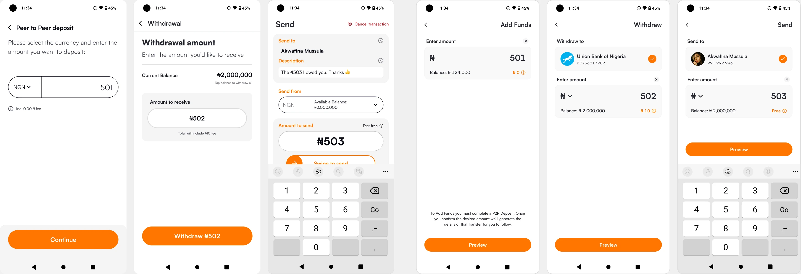
/Did you catch it?
The 3rd screen had a note
The redesign didn’t
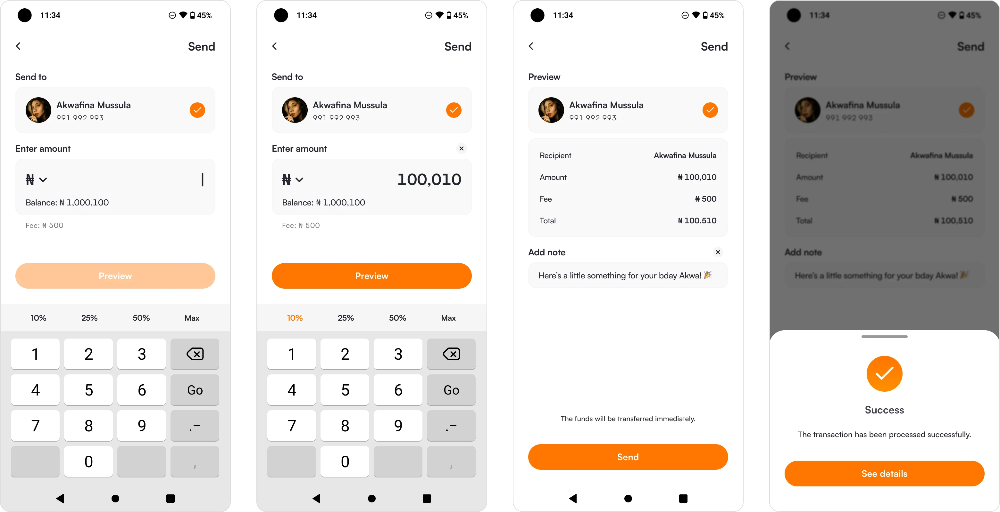
Less isn’t always more. Sometimes less is less, more is more, and even still, on occasion, more is less.
When reviewing the flows, I noticed a lack of consistency on handling previews and confirmation screens before committing a transaction or similar. The case was further inconsistent when calculating fees based on input, and very short valuation timeouts (in the case of crypto transactions). With that in mind, I made every transaction flow a Preview+Commit pair. This creates a predictability on the user experience, building trust with the user over time. It also creates more space in the flow — for example, in this scenario it allowed me to place the note input on the preview screen, keeping the first screen focused on value input.
Components are created with reusability, and flexibility of use in mind. As a system, when an input is not needed (such as the note from the previous flow) it is hidden or removed without detriment to the other elements and overall layout and functionality.
Such a considered system brings immediate benefits to the users, in terms of familiarity and easy of use. But it also has tremendous advantages to the engineering team with not only reusable components, but whole reusable flows as well. And naturally, for the design team, where the same metaphor can be used successfully in multiple use cases with confidence.
/the 6 main flows
Buy / Sell Deposit / Withdraw Send / Receive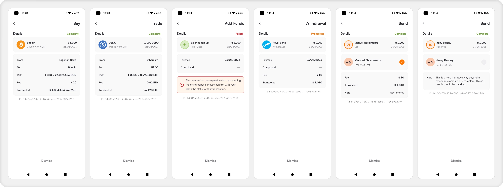
The whole redesign took a little over a month to design, and then maybe another one or two months to ship. I spent about 3 or 4 days sketching everything (I had months of experience with the app at this point, so was fairly comfortable with the direction most flows should take) and then did the 6 main flows in hi-fidelity to discuss and agree on milestones with management and engineering. The remainder of the flows I worked on whilst the devs were busy with the first batch. The reception by the users was overwhelmingly positive, incredulous even on a few marked circumstances.
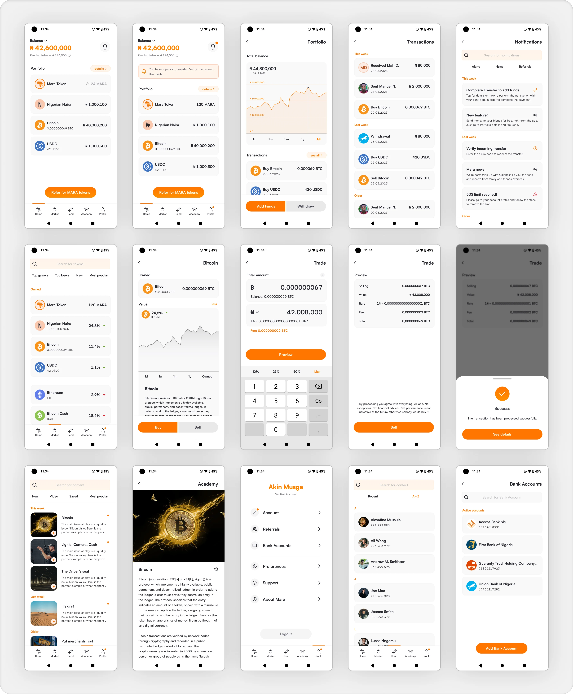